Eager to embrace new challenges and make a meaningful impact in the tech industry, I uphold a pledge of professionalism by practicing integrity, tolerance, and respect. I also strive to be a valued team member by contributing a positive work ethic and fostering a collaborative environment.
I am currently pursuing a degree in Computer Engineering and Computer Science. My experience includes collaborating with professors on research projects, where I was involved in data analysis and academic writing. I have developed an MP3 player using C on a TM4C microcontroller and created an automated wheelchair prototype utilizing C++ and Python. My past roles include serving as a General Academic Tutor, where I helped students with mathematics, digital logic, and programming, and working as a City of Stockton Information Technology Intern, where I provided technical support and handled the deployment of PCs and software. I am proficient in programming languages such as C/C++, Python, System Verilog, and HTML/PHP/CSS, and skilled with software like MATLAB, LTSpice, and AutoCAD Fusion 360. I also have experience with equipment including oscilloscopes, FPGA Cyclone IV, and Raspberry Pi 3&4. My work philosophy centers on professionalism, integrity, and respect, with a commitment to contributing positively to any team I am part of.
Education
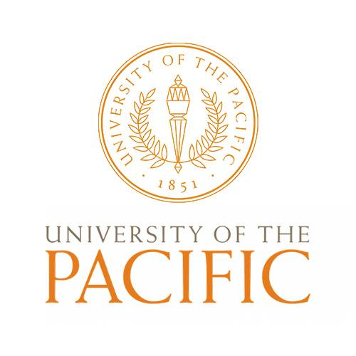
Bachelors Of Science
Computer Engineering
Aug 2020 - May 2025
Related Courses:
Digital Design
Circuits
VLSI Design
Data Structures
Design/Analysis of Algorithms
Power Electronics
Masters Of Science
Computer Science
Jan 2022 - May 2025
Related classes:
Programming Languages
ML Methods in Cyber Security
Web Development
Graph Theory
My Experience
Employment
July 2023 - Present
CRM Assistant University of the Pacific
Maintain and update CRM data for students and faculty, ensuring accuracy and integrity, Assist in creating and sending communication materials and track their effectiveness.
Aug 2022 - May 2023
Information Technology Intern City of Stockton
Tracked support tickets using Cherwell Service Management,Deployed software using the Quest K1000 server, Imaged computers using the Quest K2000 server, Installed the imaged computers at city libraries, Provided customer support remotely using Webex and Cisco Connect for communication, and BeyondTrust Remote Support for remote troubleshooting
Jan 2022 - Dec 2023
Carbon Research Intern University of the Pacific
Conducted research on the carbon footprint of EV,
manufacturing and CO2 breakdown and filtration,
Collaborated with professors and utilized databases,
Analyzed and found connections between academic papers
Jan 2022 - May 2023
General Academic Tutor University of the Pacific
Provided peer tutoring and support,
Explained coding concepts and algorithms,
Guided students through the process of creating a program
Projects
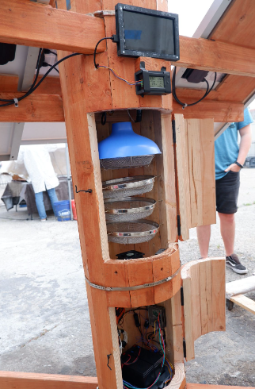
Electronic 'Tree' Received 1st Place
Aug 2023 - May 2024
Implemented sustainable energy to create a carbon-negative system. Designed and implemented a 17ft³ air purification system to capture CO2 using environmentally friendly filtration. Collected data from sensors using Python and RPI4, transferred data to a website created to display information about the ambient and captured CO2.
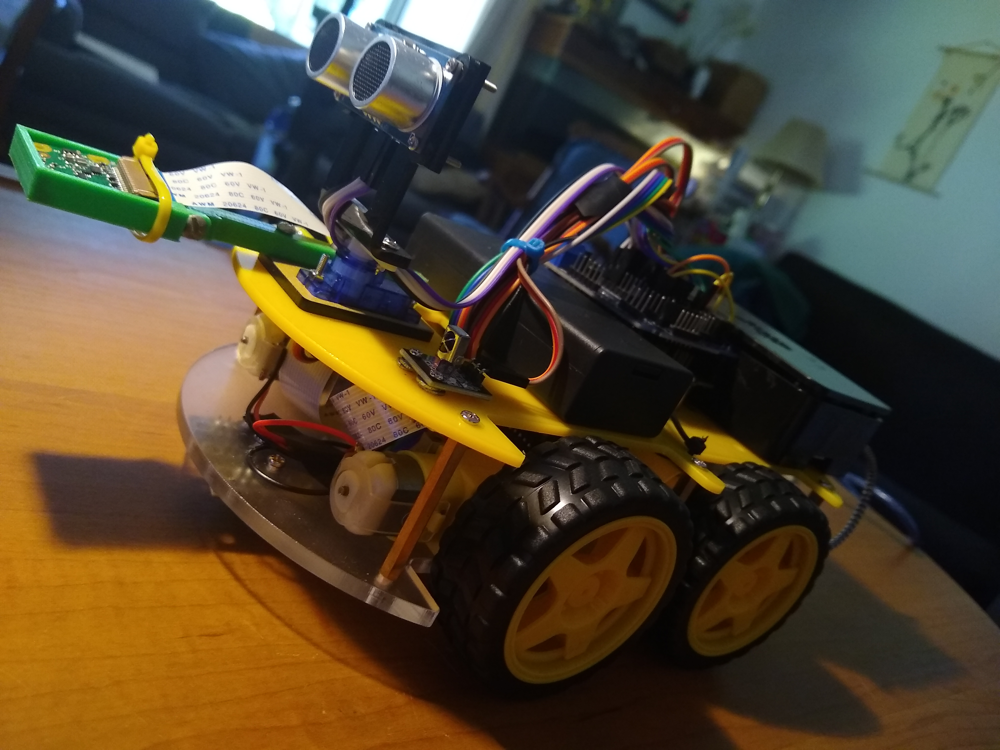
Smart Wheelchair
May 2021 - Jul 2021
Developed an automated wheelchair prototype robot. Utilized Python and C++ for programming. Presented findings at a National Science Foundation Smart City 2021 conference.
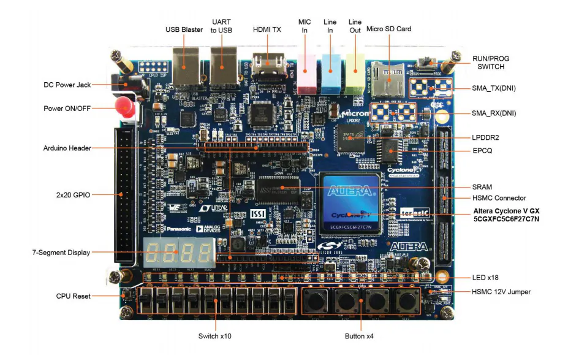
FPGA Tailights
Aug 2021 - Dec 2021
Implemented a finite state machine to imitate tail lights of a Ford Mustang. Coded Cyclone V FPGA using System Verilog.
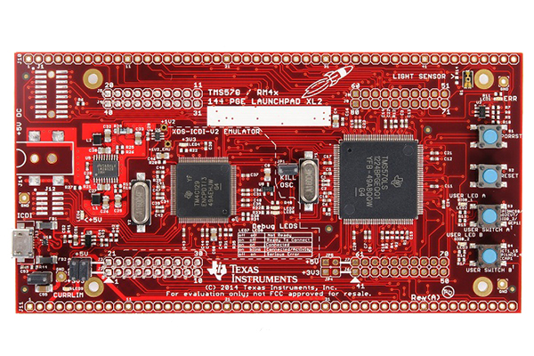
MP3 Player
Aug 2022 - Dec 2022
Coded hardware with C and assembly. Worked as a group to create a functioning MP3 player on a TM4C microcontroller. Used knowledge of circuits to connect an auxiliary port and an LCD screen.
 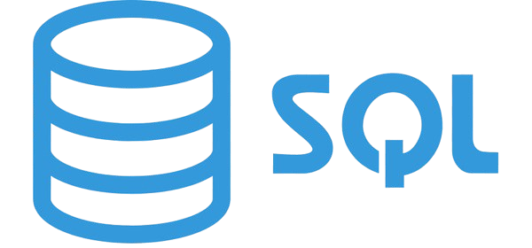
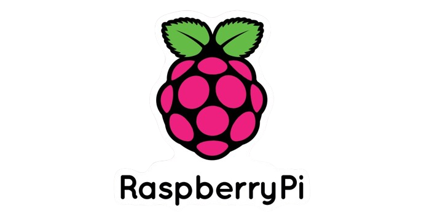
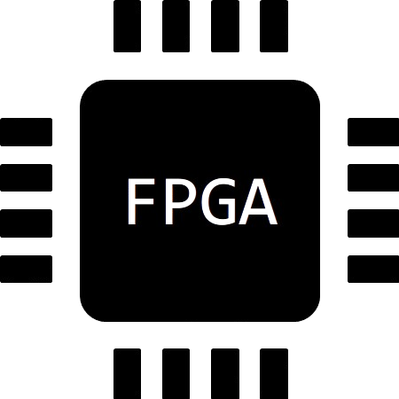
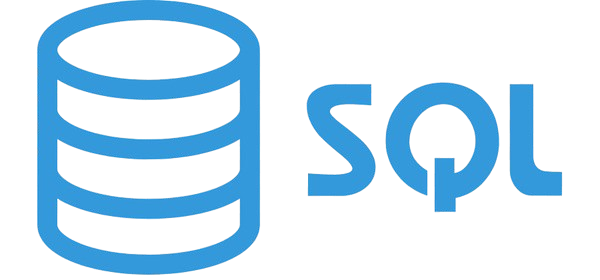
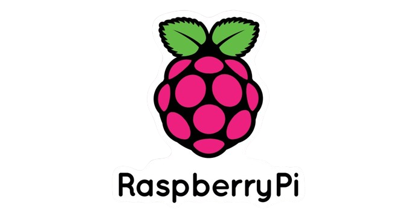
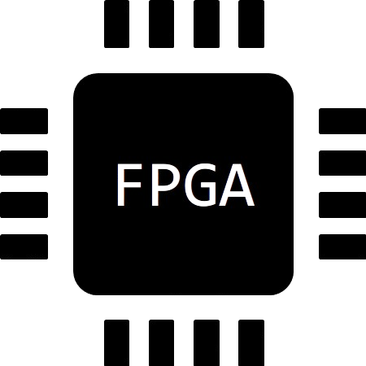